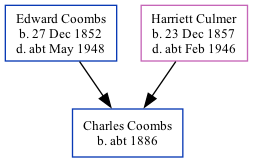

Charles F Coombs c1886 -
[ Home ] | [ Calendar ] | [ Surnames Index ] | [ Family History ]A carter on a farm and the child of Edward Coombs (an agricultural laborer) and Harriett Culmer, Charles Coombs, the second cousin twice-removed on the mother's side of Nigel Horne, was born in Hernhill, Kent, England c. 1886.
Throughout his life, Charles lived in several places: on Waterham Road in Hernhill on Apr 5, 18912; at his birthplace in 19011; and at Red Lion Inn in Hernhill on Mar 31, 19013.
Parents
- Edward was born on Dec 27, 1852
- Harriett was born on Dec 23, 1857
Citations
- 1901 England, Wales & Scotland Census - Findmypast
- 1891 England, Wales & Scotland Census - Findmypast (was age 5 and the son of the head of the household)
- 1901 England, Wales & Scotland Census - Findmypast (was age 15 and the son of the head of the household)
Media
1891 England, Wales & Scotland Census - GBC/1891/0005777449
Family Tree
Generated by Ged2Site. Last updated on Jul 20, 2025